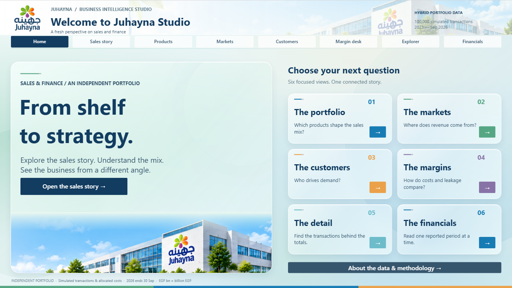

Juhayna Studio
مشروع Power BI قابل للتعديل، بصفحة Home وتصميم زجاجي موحّد.
طريقة الفتح
- فك ضغط الحزمة كاملة أولًا. افتح
Juhayna_Studio.pbixباستخدام إصدار حديث من Power BI Desktop. - الملف يحتوي على الداتا المستوردة، ويمكن تصفّحه بدون Refresh. في وضع التحرير، استخدم
Ctrl + Clickمع أزرار التنقّل. - الفلاتر الأساسية متزامنة بين صفحات تحليل المبيعات. صفحة Financials تستخدم اختيار فترة مالية مستقلًا.
- للتعديل على ملفات المشروع، افتح
Juhayna_Studio.pbipمع الاحتفاظ بمجلدي Report وSemanticModel بجواره. نسخة GitHub لا تتضمن ملفات Cache أو إعدادات الجهاز؛ عدّلWorkbookPathإلى موقع ملف Excel عندك ثم نفّذ Refresh لتحميل البيانات في مشروع PBIP. ملف PBIX يحتوي على البيانات بالفعل.
إذا نقلت المشروع إلى مكان آخر
قبل Refresh، افتح Home → Transform data → Edit parameters وعدّل WorkbookPath إلى المسار الكامل لملف Excel داخل مجلد data في المكان الجديد، ثم طبّق التغيير. هذا مطلوب لتحديث المصدر، وليس لعرض الداتا المحفوظة.
ما الذي تم تنظيفه؟
تم استبعاد 5 جداول غير لازمة للتحليل المعروض، و24 عمودًا زائدًا من الجداول المتبقية، و7 Measures مرتبطة بالـTargets الافتراضية أو بيانات غير مستخدمة. الموديل النهائي يحتوي على 9 جداول و5 علاقات أحادية الاتجاه و80 Measure. ملف Excel الأصلي لم يتم تعديله.
موجود أيضًا ملف DAX، نتائج اختبارات الحسابات والعرض، وصور الصفحات التسع من Power BI Desktop نفسه. خلفيات الزجاج صور تصميمية؛ الأرقام والشارتس والجداول والفلاتر عناصر Power BI أصلية قابلة للتعديل. عند نقل حاويات العرض، يجب تعديل الخلفية أو استبدالها للمحافظة على المحاذاة.
الداتا Hybrid لأغراض Portfolio: معاملات المبيعات والعملاء وتوزيعات المنتجات محاكاة، وليست بيانات تشغيل داخلية للشركة. القيم المالية منقولة كما وردت في ملف المصدر وليست إعادة تدقيق مستقلة. سنة 2026 تنتهي في 30 سبتمبر، والفترات السنوية والمرحلية لا يتم جمعها معًا.
